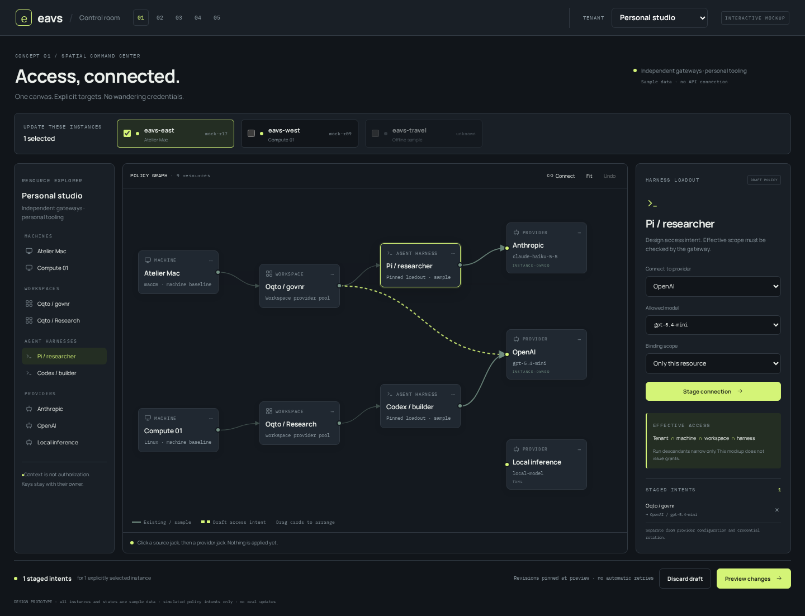
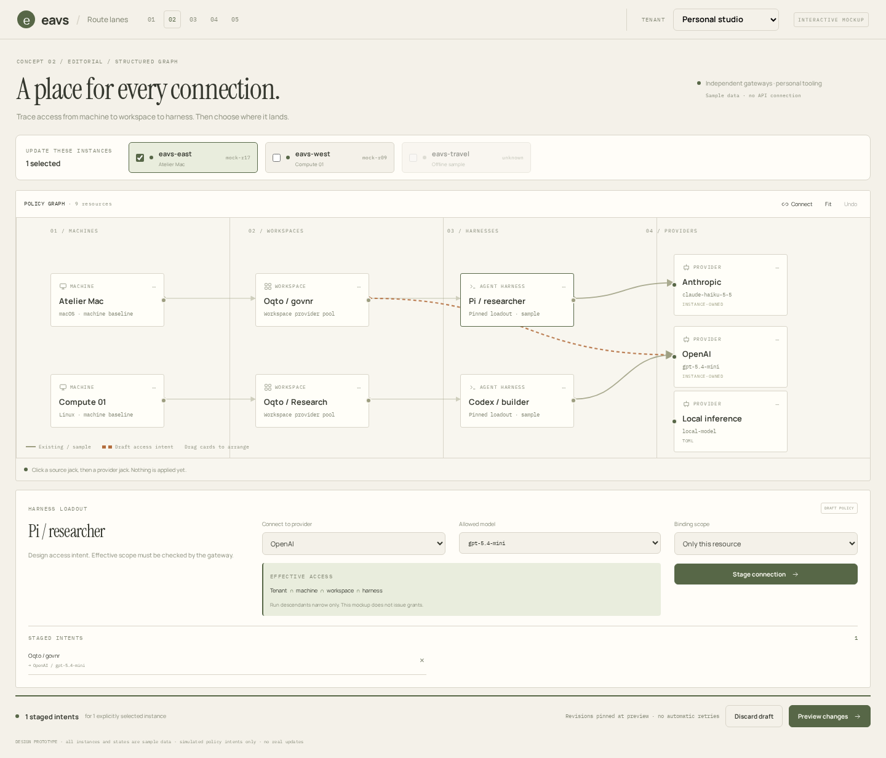
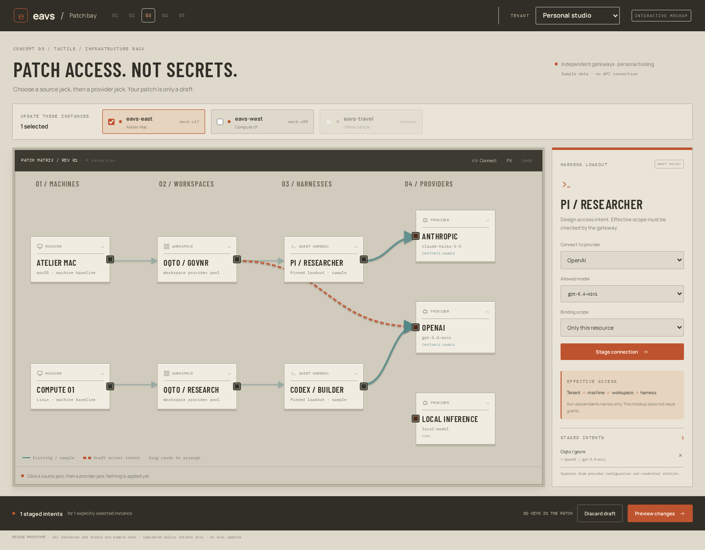
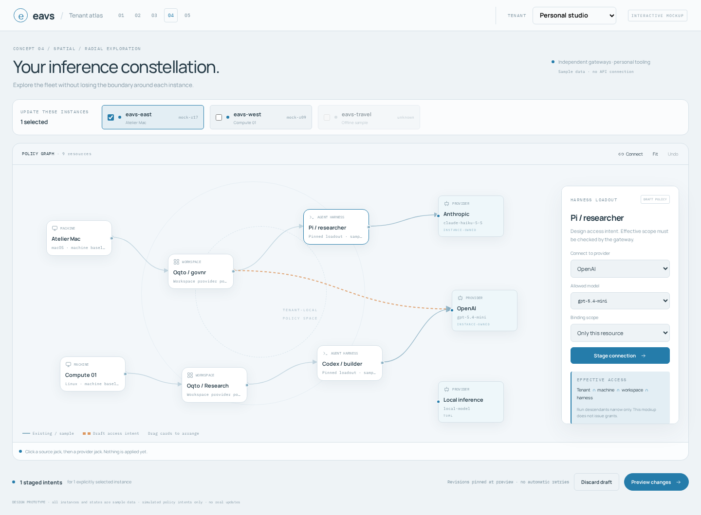
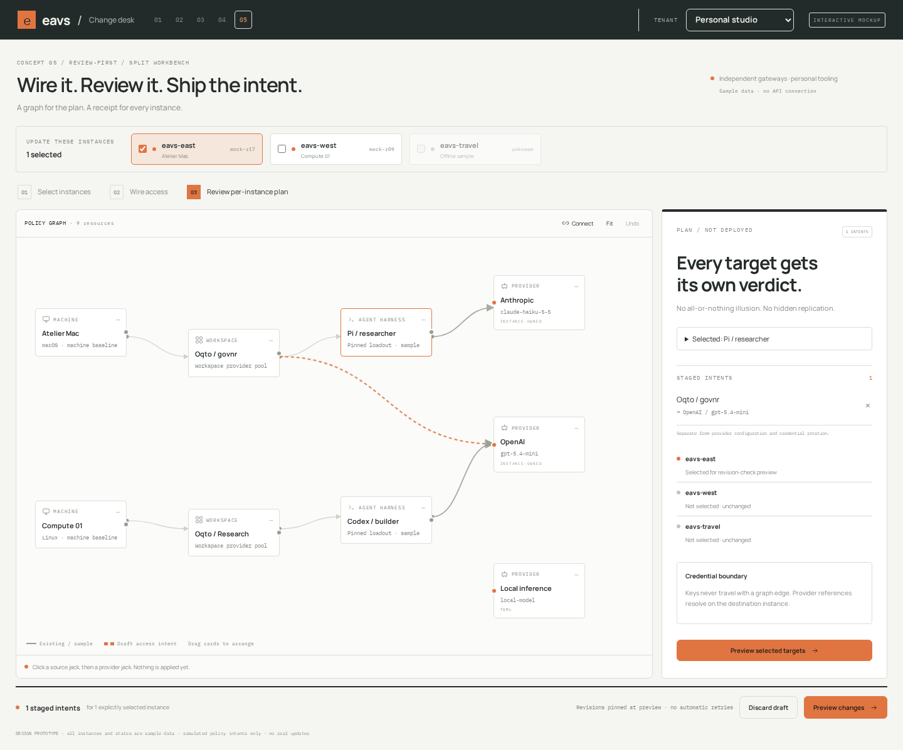

Machines, Oqto workspaces and agent harnesses connected to providers. A tenant switch keeps the context clear. Explicit instance selection keeps the blast radius honest.

Graph at the center, resource explorer on the left, access inspector on the right. Familiar operator ergonomics, sharp boundary cues.

A left-to-right access story. Machines, workspaces, harnesses and providers each get a lane. Easier to audit inheritance at a glance.

Racks, jacks and cables. A deliberately tangible way to connect resource scopes without implying that keys travel along the wires.

A calmer, constellation-like map. Floating tools leave more room for the fleet, while the tenant and chosen instances stay visible.

Graph for designing. Plan for deciding. A full-height review column makes target eligibility, source ownership and independent outcomes the main event.